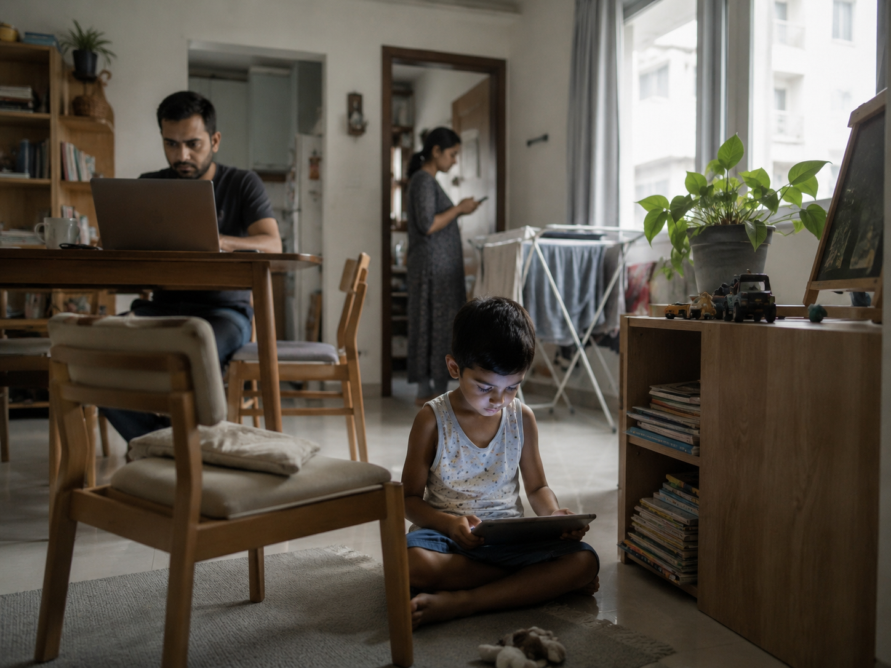
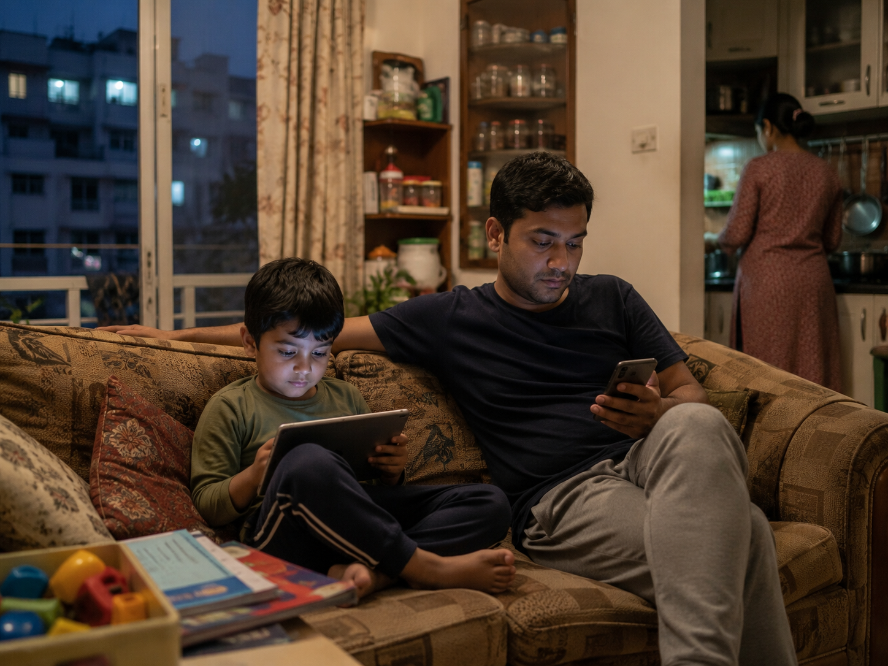

01
It is not simply “bad parenting.”
The weak argument blames parents. The stronger argument studies the conditions that make screens an easy fallback.
Coined framework · media, care, and modern childhood
A name for what happens when screens become the cheapest available form of calm, distraction, and temporary care — not because parents do not care, but because care itself has been made difficult.

Work, chores, fatigue, and a quiet child held in place by a glowing screen.

Easeparenting is best read as a care arrangement, not merely a character flaw.
The use of screens as a low-friction care substitute when adult attention, safe play, time, and social support are structurally scarce.
The weak argument blames parents. The stronger argument studies the conditions that make screens an easy fallback.
The real distinction is between purposeful, social use and default pacification that displaces sleep, play, or conversation.
Housing, work pressure, domestic labour, safety, school rhythms, and platform design all push the same choice.
Families need lower-friction alternatives, and institutions need to carry part of the burden.
There is a weak argument about children and screens: parents are careless, children are addicted, and the fix is discipline. That argument is emotionally satisfying and analytically shallow. It individualises a pattern that is clearly social.
The stronger claim is this: easeparenting emerges when other forms of care become expensive in time, energy, space, or attention. A screen can keep a child still while a parent finishes a deadline, cooks dinner, takes a call, rests, or simply survives the evening. That does not make the habit harmless. It makes it intelligible.
By naming the pattern, the project asks a better question. Not simply, “Why do parents hand over devices?” but “What design of family life makes that move feel so necessary, so ordinary, and so difficult to refuse?”
Long hours, remote work bleed, and unstable attention make uninterrupted care difficult.
Cooking, cleaning, sibling care, and emotional labour compress the adult bandwidth available to children.
Small homes, unsafe streets, and limited play infrastructure reduce the alternatives to sitting still indoors.
Apps are frictionless, sticky, and designed to prolong attention with minimal effort from adults.
The device becomes a pause button: immediate, portable, repeatable, and socially normalised.
Fewer spontaneous exchanges, fewer shared stories, fewer chances to read mood and response.
Children lose unscripted time — the often-uncomfortable space where imagination and self-direction grow.
Quiet screens replace physical play, rough-and-tumble activity, and exploration.
Late use and constant stimulation can spill into bedtime and family routines.
The screen quietly becomes the third parent — not in love, but in labour.
None of the pressures alone explains the whole pattern. Together, they make the screen a highly rational convenience.
Reported among school-going children in Dhaka in a 2026 icddr,b study summary.
Source cue · icddr,bShare of participating Dhaka children reported to be over recommended recreational screen-time thresholds.
Source cue · icddr,bChildren aged 24–59 months in Bangladesh receiving early stimulation and responsive care from an adult household member.
Source cue · UNICEF Bangladesh / MICSThe responsible reading of the research is not that every minute of screen use harms every child. Age, content, co-use, sleep, movement, temperament, and family context matter. A video watched with a parent is not the same as a device used to buy silence. A learning app is not the same as an endless feed.
But nuance should not become denial. Repeated, solitary, high-volume, convenience-based screen use is a distinct pattern. Easeparenting names that pattern. The term becomes useful precisely because it refuses both extremes: the panic that says all screens are poison and the complacency that says screens are simply modern life.
Often time-limited, contextual, and linked to conversation or learning.
Used to occupy attention quickly with minimal adult input.
Can support explanation, storytelling, co-viewing, or creation.
More likely to displace play, boredom, movement, or talk.
The term does not condemn all digital use. It asks what kind of use is being normalised.
This is where a device quietly functions as a substitute caregiver.
These images work because they avoid the melodrama of “caught in the act” stock photography. No one is framed as monstrous. The emphasis is on distributed attention, fatigue, and domestic compression. The design language of the page should do the same: explain the system, not humiliate the family.
Create two device-light anchors: one meal and one bedtime period. Make books, drawing tools, and physical play more visible than the nearest screen.
Track the moments screens appear most easily — tantrums, chores, work calls, exhaustion — and design alternatives around those triggers.
Teach media habits as practical literacy: attention, boredom, algorithms, sleep, and what persuasive interfaces are designed to do.
Safe play spaces, childcare, flexible work, and public support matter because less screen dependence is not just a parenting virtue — it is a material possibility.
“Easeparenting is not a style to celebrate. It is a warning light on the dashboard of modern care.”— Final position of the article
The article can live as a portfolio project, but it becomes stronger when it clearly signals the evidence base that informed the concept.